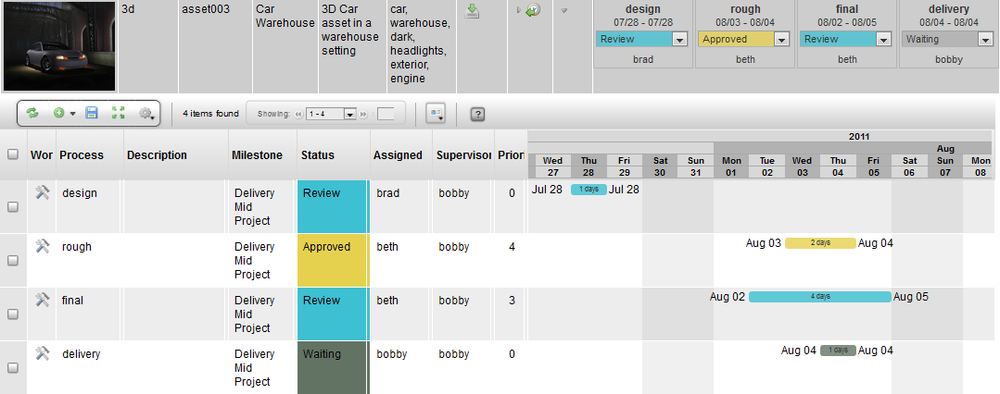

This widget displays the value in the database "as is", in its raw unformatted form. This is the default display widget.
Note
The Simple Table Element widget is the same as the Raw Data widget.
|
Name |
Simple Table Element |
|
Class |
raw_data |
|
TACTIC Version Support |
3.0.0 + |
|
Required database columns |
none |
Use this widget to display the value in the database "as is", without any pre-formatting. This widget is the default display widget.
For example, to display the keywords field, as is, from the Edit Column Definition->View Mode: Select Widget -> Raw Data -> text.

The Formatted Widget displays a raw data value as a formatted string so the user can recognize and interpret the value more easily.
For example, the Format Widget will display a number in the format $1,234.00 which the user quickly recognizes as a currency value in dollars and cents.
|
Name |
Formatted Widget |
|
Class |
FormatElementWdg |
|
Category |
Simple Table Element Widget |
|
Supported Interfaces |
|
|
TACTIC Version Support |
3.6.0+ |
|
Required database columns |
none |

| integer | -1234
-1,234 |
| float | -1234.12
-1,234.12 |
| percent | -13%
-12.95% |
| currency | -$1,234
-$1,234.00 -$1,234.-- -1,234.00 |
| date | 31/12/99
December 31, 1999 31/12/1999 Dec 31, 99 Dec 31, 1999 31 Dec, 1999 31 December 1999 Fri, Dec 31,99 Fri 31/Dec 99 Fri, December 31, 1999 Friday, December 31,1999 12-31 99-12-31 1999-12-31 12/99 31/Dec December 52 |
| time | 13:37
13:37:46 01:37 PM 01:37:46 PM 31/12/99 13:37 31/12/99 13:37:46 |
| scientific | -1.23E+03
-1.234E+03 |
| boolean | true|false
True|False Checkbox |
| timecode | MM:SS.FF
MM:SS:FF HH:MM:SS.FF HH:MM:SS:FF |

The ExpressionElementWdg allows you to use the TACTIC expression language to determine the value displayed in the table cell. The expression is caclulated from a starting sobject which represents the sobject in the particular row in the table. The expression is evaluated for each sobject on every row. When an expression is evaluated, the value is added to a dynamic attribute of the sobject and can be used in future expressions in this widget. Please refer to the expression language reference for more information on the expression language.
Info
|
Name |
ExpressionElementWdg |
|
Class |
tactic.ui.table.ExpressionElementWdg |
|
Category |
Common Columns |
|
Supported Interfaces |
TableLayoutWdg |
|
TACTIC Version Support |
2.5.0 + |
|
Required database columns |
depends on expression |
Display the total cost of an item by multiplying the total_number column with the unit_cost column When an expression is evaluated by the ExpressionElementWdg, a new attribute with the name of the element is dynamically added to the sobject (in this cost) which can be used in the "bottom" directive.
Options
|
expression |
Expression to evaluate the widget |
|
alt_expression |
Alternate expression to evaluate the widget for alternate use, like edit value |
|
inline_styles |
Styles to add to the DIV generated that contains the result of the expression |
|
return |
single|list - Determines what the expression return type should be |
| bottom | Expression to calculate the bottom row of the table |
| mode | value|boolean|check - Display mode for this widget |
| enable_eval_listener | Currently javascript expression evaluation is not fully baked, so only use the client side evaluation listener when needed and NOT by default |
| icon_expr | Expression to evaluate which icon to use when mode = 'icon' |
Display the number of tasks for a given sobject and then display the total number at the bottom.
Mode "boolean" displays a green dot for every sobject that has an expression that evalutes to True. In this case, a green dot is display on every row where the number of tasks is greater than zero.
Another example of a mode which displays a checkbox instead of red/green dots. The checkbox appears for any result greater than zero
The expression language has the ability to get values from other related tables. The following example illustrates an expression to find the description of the parent sequence of a shot.
Ultimately, the ExpressionElementWdg can make use of any expression in the TACTIC Expression Lanaguage.
When using mode = 'icon', it is possible to set up an expression using icon_expr to determine what that icon should be. A special variable $VALUE is used to determine the value of the expressions
The Expression Value Element widget accepts a TACTIC Expression as the input and displays the evaluated expression as the output.
Info
|
Name |
Expression Value Element Widget |
|
Class |
expression_value |
|
TACTIC Version Support |
2.5.0 + |
|
Required database columns |
Yes, a database column by the same name. |
For example, we can dynamically display the number of login names in the login table. This would be an example of an absolute expression because the expression does not take into input any data from the row the field is on. A relative expression has access to the row and table information that the row the expression is on.
Note
The difference between an absolute expression and a relative expression:
-an absolute expression does not take into input any data from the row or table that the field exists on
-a relative expression has access to the row and table information that the field exists on
Go into edit mode for the Expression Value Element widget. Input an absolute TACTIC expression as the value.
In display mode, this widget will display the result of the evaluation of the expression.
For example, enter the following absolute TACTIC Expression as the value for the Expression Value Element widget:
In display mode, this widget will evaluate the expression and display the count of the number snapshot files in the database.
For example, enter the following absolute TACTIC Expression as the value for the Expression Value Element widget:
In display mode, this widget will evaluate the expression and display the count of the number of logins in the login table.

The ButtonElementWdg is an icon that behaves as a button which must be placed inside a TableLayoutWdg. This widget allows you to add a simple button with in a table that when pressed, will execute a JavaScript callback. This callback can be inline to the element definition or it can point to a script code or script path in the Script Editor ( "custom_scripts" table).
|
Name |
Button |
|
Class |
tactic.ui.table.ButtonElementWdg |
|
Category |
Button |
|
Supported Interfaces |
TableLayoutWdg |
|
TACTIC Version Support |
3.0 + |
|
Required database columns |
none |
The usage of the button widget is very simple. It appears as an icon in the cell of a table. Hovering over it will light the color and if a "tool_tip" is defined, then this message will appear. Clicking on the button will activate the callback and perform whatever action has been set up for this button.
The button widget is often implemented through the view options when creating/editing a column.
Options
|
icon |
The icon to display for the button. See IconWdg for reference. |
|
script |
Points to the script code that is executed when the button is clicked |
|
path |
Points to the folder/script_name of the config/custom_script that is to be executed when the button is clicked (This is recommended option) |
| icon_tip | Text to display as a tool-tip when mouse is hovering over icon |
|
enable |
Expression to determine whether the button is enabled or not |
| cbjs_action | Inline script |
Simple inline alert using default icons.
<element name='my_button' title='My Button Example'>
<display class='tactic.ui.table.ButtonElementWdg'>
<cbjs_action>alert('Pressed')</cbjs_action>
</display>
</element>Add a custom icon listed in IconWdg
<element name='my_button' title='My Button Example'>
<display class='tactic.ui.table.ButtonElementWdg'>
<icon>FILM</icon>
<cbjs_action>alert('Pressed')</cbjs_action>
</display>
</element>A more complex inline code using CDATA
<element name='my_button' title='My Button Example'>
<display class='tactic.ui.table.ButtonElementWdg'>
<icon>FILM</icon>
<cbjs_action>
<![CDATA[
if ( confirm("Are you sure you want to press") ){
alert("do something...")
}
]]>
</cbjs_action>
</display>
</element>This will call the custom_script with the folder "test" and title "my_test_script". Inlining long JavaScript can be messy and this provides a means of separating out the behavior logic from the configuration. The script that is called will have a bvr object available to it. This behavior object will have a number of attributes which are useful for extracting information about the button that was pressed.
<element name='my_button' title='My Button Example'>
<display class='tactic.ui.table.ButtonElementWdg'>
<icon>FILM</icon>
<path>test/my_test_script</path>
</display>
</element>
The Link Element Widget facilitates creation of a hyperlink. Clicking on the link button opens the hyperlink in a new tab in the web browser.
|
Name |
Link Element |
|
Common Title |
Link |
|
Class |
Link |
|
TACTIC Version Support |
3.0.0 + |
|
Required database columns |
none |
Go into edit mode for the Link column. Specify the full URL to a hyperlink, such as: http://support.southpawtech.com.
Save the data and refresh the view.
Click on the link icon and the link to the web page will be opened in a new tab.
The Link Element Widget can be created using the Create New Column and specifying: Display -> Widget -> Link.
The Gantt widget has the capability of displaying all projects schedules along with sequences and tasks schedules. With the widget you can switch between weeks to months view. This widget can be utilized and edited in multiple different ways. It also displays the start and end date along with the amount of days.

|
Name |
Calendar Gantt Widget |
|
Class |
GanttWdg |
|
Category |
Common Columns |
|
Supported Interfaces |
|
|
TACTIC Version Support |
2.6.0+ |
|
Required database columns |
configurable. |
There are many ways to edit the Gantt Widget. You can also edit what part of the month, week or year of the schedule to view. Clicking on the header date of the Gantt Widget will toggle the different viewing options.


Above shows two different displays of viewing the range of the date. Clicking on the weeks will toggle to another viewing range.

The bars that show the schedule can also be edited using the UI. Hovering the mouse over the bars will popup a a window that will display the dates of the schedule.

The bars can also be editied by selecting the start and end dates and sliding the either end from the right to left. The first image below shows the end of the date stretched to May 14 and the second image shows the start date streched back to March 13.


The schedule bar can also move sideways while keeping the number of days constant by selecting the bar and shifting it from left to right.

The Gantt Widget can also be edited using multi selection. Whether it is changing the end date, start date or sliding the bars forward and backward, the Gantt Widget can hande it. Below are images of a few examples of having the sequences muli-selected and edited.


The Gantt Widget also has the capability of sliding the full time line by selecting the empty area of the widget and dragging the mouse left or right.

The Gantt Widget can be found under the column manager as task schedule.

The following example illustrates a Gantt Widget that shows all tasks for a project, the schedule for all asset tasks, and the schedule for all shot tasks.
<element name='task_schedule'>
<display class='tactic.ui.table.GanttElementWdg'>
<options>[
{
"start_date_expr": "@MIN(sthpw/task.bid_start_date)",
"end_date_expr": "@MAX(sthpw/task.bid_end_date)",
"color": "white",
"edit": "true",
"default": "true"
},
{
"start_date_expr": "@MIN(sthpw/task['search_type', '~', 'asset'].bid_start_date)",
"end_date_expr": "@MAX(sthpw/task['search_type', '~', 'asset'].bid_end_date)",
"color": "red",
"edit": "true",
"default": "false"
},
{
"start_date_expr": "@MIN(sthpw/task['search_type', '~', 'shot'].bid_start_date)",
"end_date_expr": "@MAX(sthpw/task['search_type', '~', 'shot'].bid_end_date)",
"color": "blue",
"edit": "true",
"default": "false"
}
]</options>
</display>
<action class='tactic.ui.table.GanttCbk'>
<sobjects>@SOBJECT(prod/shot.sthpw/task)</sobjects>
<options>[
{
"prefix": "bid",
"sobjects": "@SOBJECT(sthpw/task)",
"mode": "cascade"
},
{
"prefix": "bid",
"sobjects": "@SOBJECT(sthpw/task['search_type', '~', 'asset'])",
"mode": "cascade"
},
{
"prefix": "bid",
"sobjects": "@SOBJECT(sthpw/task['search_type', '~', 'shot'])",
"mode": "cascade"
}
]</options>
</action>
</element>
Note: There are 3 editable bars in the display options in the above example and therefore, there are 3 corresponding action options. The 'prefix' action option assumes that the column in the table is named like <prefix>_start_date and <prefix>_end_date. If your column names are different, you would want to use the action_option "start_date_col" and "end_date_col" with the full column name as the value.
The HiddenRowToggleWdg is used to add a cell to a table which when toggled, exposes a hidden view. This vew supports the embedding the following Widgets:
-
TableLayoutWdg
-
CustomLayoutWdg
-
ViewPanelWdg

|
Name |
HiddenRowToggleWdg |
|
Class |
tactic.ui.table.HiddenRowToggleWdg |
|
Category |
Common Columns |
|
Supported Interfaces |
TableWdg |
|
TACTIC Version Support |
2.5.0 + |
|
Required database columns |
none |
The HiddenRowToggleWdg is primarily a configuration tool which provides very simple usage for the user. By clicking the expand arrow, the hidden row will expand. Also, to batch expand the same HiddenRow for multiple rows in the table, select the desired rows (SObjects) and in the table header, do one of the following:
-
Click the triangle to expand or collapse the HiddenRow for the selected SObjects.
|
dynamic_class |
The class to embed in the hidden row |
|
new |
Depricated |
|
dynamic |
Depricated |
|
static |
The view is loaded when the page loads |
|
parent_key |
The parent key of the parent SObject (Internal) |
The following HiddenRowToggleWdg is defined in the definition view for a prod/sequence. The embedded table shows a view of prod/shot SObjects in a view called shot_hierarchy
<element name='shots'>
<display class='HiddenRowToggleWdg'>
<dynamic_class>tactic.ui.panel.TableLayoutWdg</dynamic_class>
<search_type>prod/shot</search_type>
<view>shot_hierarchy</view>
<mode>simple</mode>
<do_search>true</do_search>
<show_row_select>false</show_row_select>
</display>
</element>The following HiddenRowToggleWdg is used to show a view of prod/asset SObjects which have been planned (assiciated) to a prod/shot SObject. In this case, the available <expression/> option is used in the TableLayoutWdg to get the assets by traversing through the follwoing search types:
prod/shot -> prod/shot_instance -> prod/asset <element name='assets'>
<display class='HiddenRowToggleWdg'>
<dynamic_class>tactic.ui.panel.TableLayoutWdg</dynamic_class>
<search_type>prod/asset</search_type>
<view>assets_hierarchy</view>
<expression>@SOBJECT(prod/shot_instance.prod/asset)</expression>
<mode>simple</mode>
<do_search>true</do_search>
<show_row_select>false</show_row_select>
</display>
</element>The following example shows how the dynamic_class is used to point to which widget to use in the hidden row.
<element name='tasks'>
<display class='HiddenRowToggleWdg'>
<dynamic_class>tactic.ui.panel.TableLayoutWdg</dynamic_class>
<search_type>sthpw/task</search_type>
<view>task_hierarchy</view>
<mode/>
<do_search>true</do_search>
<show_row_select>true</show_row_select>
</display>
</element>Facilitates drag-and-drop of an item between 2 views. For example, drag a user from one view and drop it into a user group.
|
Name |
Drop Element Widget |
|
Common Title |
Drop Element Widget |
|
Class |
tactic.ui.table.DropElementWdg |
|
TACTIC Version Support |
3.0.0 + |
|
Required database columns |
none |
For example, in the Shot Planner view, individual assets can be added to a shot by simply dragging the asset from one view and dropping it onto the shot in another view. Once the asset is dropped onto the shot, the asset will appear in the column with a "NEW" flag. Hit the save button in the shot view to preserve the changes.
Options
|
Accepted Drop Type |
The acceptable sType that can be clicked on to be dragged and dropped onto another type. For example, sType is vfx/asset. |
|
Instance Type |
For the item that is being dragged, it is the sType that the item can be dropped onto. For example, sType is vfx/asset_in_shot" |
|
Cbjs Drop Action |
The call back JavaScript to run each time an item is dropped into the column. |
|
Display Expr |
The expression to run to display in view mode. For example "@" |
A many-to-many relationship between the 2 types needs to be created in the Schema Editor. By convention, the "join" node that need to be created to connect the 2 types should be named: "<sType1>_in_<sType2> ". For example, for the join node named: "asset_in_shot". The "asset_in_shot" node stores the data representing the relationship between the asset and which shot it appears in.
The view where the item to be dropped onto the Drop Element column of, can exist in a custom layout table or a view opened in a new window within the TACTIC session.